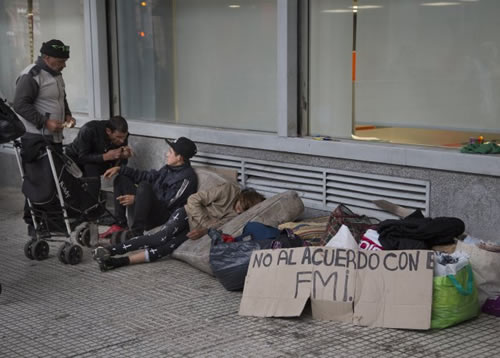

Real Chubut - Agencia de Noticias


La pobreza aumentó a 32% y ya afecta a 14 millones de personas

El índice registró una suba de 6,2 puntos porcentuales frente a igual período de 2017 (25,7%), y un incremento de 4,7 puntos con relación al semestre previo (27,3%).
Por la caída de la economía, la devaluación del peso, y un incremento en los precios por sobre los salarios, la pobreza aumentó fuerte al 32% en el segundo semestre de 2018, según el Instituto Nacional de Estadística y Censos (INDEC).
Lejos del slogan de campaña "pobreza cero" que utilizó el presidente Mauricio Macri durante 2015, el índice registró una fuerte suba de 6,2 puntos porcentualesfrente a igual período de 2017 (25,7%), y un incremento de 4,7 puntos con relación al semestre previo (27,3%).
Consultado por ámbito.com, el sociólogo Diego Born explicó que la pobreza se mide en las grandes ciudades, no en todo el país. "En las 31 grandes ciudades viven alrededor de 27 millones de personas, con lo cual ese 32% representa 9 millones de personas. Si se lo extrapola a los 44 millones de habitantes de todo el país da un número aproximado de 14 millones de argentinos bajo la línea de pobreza", sostuvo y agregó que respecto al dato de 2017 este representa una cifra aproximada de 2,8 millones de nuevos pobres.
En tanto, según datos de Ecolatina, las nuevas cifras del INDEC reflejan que se sumaron 2,9 millones en un año y 850 mil nuevos indigentes, lo que lleva a totalizar en el segundo semestre 14,3 millones pobres y 3 millones de indigentes.
Durante el año pasado la economía bajó 2,5%, la inflación llegó al 47,6% y la desocupación subió al 9,1% desde el 7,2% de finales del 2017, según datos del propio Indec.
El INDEC informó además que el 6,7% de la población se encontraba en situación de indigencia en ese período, comparado con un 4,8% en el segundo semestre de 2017.
Los hogares en situación de pobreza alcanzaron al 23,4% en el período julio-diciembre 2018, desde un 17,9% en el mismo periodo de 2017.
Respecto a las regiones, las cifras más altas se registraron en la del Noreste (40,4%); en la del Noroeste (34,5%); y en la Pampeana (32,1%). En tanto, por debajo del promedio, se ubicaron la de Cuyo (31,5%); el Gran Buenos Aires (31,3%); y la Patagonia (24,9%).
Con el 49,3%, Corrientes registró el mayores nivel de pobreza del país. Le siguieron Concordia (41,9%); Gran Resistencia (41,4%); Santiago del Estero-La Banda (38,9%); Salta (37,7%); Gran Córdoba (36,5%); Partidos del GBA (35,9%); y Posadas (35,7%).
La pobreza afecta en mayor medida a los niños menores de 14 años. Según el INDEC, el 46,8% de ellos vive bajo la línea de pobreza. "El atraso del poder de compra de la Asignación Universal por Hijo (AUH) no hizo más complejizar esta situación", inicó un informe de Ecolatina.
Si bien la incidencia de la pobreza y la indigencia es menor, los adultos mayores (más de 65 años) también sufrieron las consecuencias del deterioro económico:los aumentos de los haberes previsionales perdieron por varias cabezas frente a la inflación (situación similar a la observada en la AUH).
Por su parte, los adultos (quienes típicamente cuentan con empleos más estables) fueron los menos golpeados.
Tras la publicación de las cifras oficiales, la ministra de Salud y Desarrollo Social,Carolina Stanley, afirmó que "hoy es un día triste", tras conocerse el índice de pobreza, pero resaltó que el Gobierno nacional decidió "decir la verdad, hablar del tema y trabajar todos los días para poder reducir la pobreza y mejorar la calidad de vida de todos los argentinos".
"Pobreza cero, más allá de haberlo mencionado en la campaña, tiene que ver con un objetivo, un horizonte, una forma de trabajar", afirmó la ministra en conferencia de prensa junto al ministro de Producción y Trabajo, Dante Sica.
La ministra reiteró que "el Gobierno nacional trabaja el tema de la pobreza desde cada ministerio y considera la pobreza en todas sus dimensiones".
Hace unos días, el presidente Mauricio Macri afirmó que "vamos a tener el mismo nivel de pobreza que cuando asumimos " (32,2%), y explicó que "no prometí 'pobreza cero', (sino que) es una tendencia a la que tenemos que ir trabajando.
El lunes, el Observatorio de la Deuda Social de la Universidad Católica Argentina (UCA) dio a conocer sus estimaciones, y difundió que la pobreza escaló 4,7 puntos porcentuales en 2018 hasta el 31,3% de la población argentina y ya afecta a 12,7 millones de personas.
En ese contexto, el 28,2% de la población tiene serios problemas alimentarios, dice el informe de la UCA que a diferencia del INDEC no mide por ingresos sino que realiza una medición sobre seis dimensiones de carencia humana.
El Indec mide la pobreza a partir de la posibilidad que tiene una persona o un núcleo familiar de adquirir la cantidad mínima de alimentos, indumentaria y servicios que integran la Canasta Básica Total (CBT).
Esta canasta, para una pareja con dos hijos de 6 y 8 años, alcanzó a fines del año pasado a $ 25.493,80, lo que marcó un aumento del 52,9% en relación a diciembre del 2017.
En cuanto a la indigencia, se fija por la cantidad mínima de comida que requiere una persona o una familiar, para subsistir, y que a fines del año pasado estaba en $ 10.197,53, con un aumento del 53,5% interanual.
Fuente: Ambito